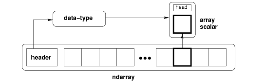
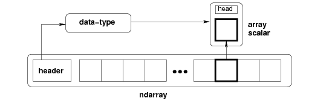

NumPy 数组
在本教程中，我们将介绍 Numpy 数组，它们如何被创建、数组中的维度，以及如何检查数组中维度的数量。
NumPy 库主要用于处理数组。一个数组基本上是一个值网格，并且是 Numpy 中的中央数据结构。Numpy 中的 N 维数组类型对象主要称为数组。
数组中的每个单个元素总是采用与存储块相同大小的。
存储在数组中的所有元素都是相同类型的，称为数组
dtype。NumPy 中的索引总是从“0”索引开始。
为了创建一个
ndarray，我们需要将一个列表、元组或者类似数组的对象传递到array()方法中，然后将它转换成一个ndarray。如果你想从
ndarray到对象中提取任何一个项目，那么可以借助切片来完成，然后用数组标量类型之一的 Python 对象来表示。
下面我们有一张图片给大家展示ndarray``dtype``array``scalar``type:
 

整个图形表示一个ndarray，在使用切片从ndarray提取元素后，我们得到一个标量类型的对象。
在接下来的几页中，我们将介绍切片、索引和排序等各种操作。
了解了 NumPy 数组之后，现在我们进一步了解如何创建ndarray对象。
创建 NumPy ndarray对象
要创建 NumPy ndarray对象，array()函数在 Python 中使用。
ndarray 还可以使用各种数据类型(如列表、元组等)来创建。
可以在创建数组时显式定义数组的类型
需要注意的是，结果数组的类型只是从序列中元素的类型推导出来的。
语法:
下面是array()函数所需的语法:
numpy.array(object, dtype, copy, order, subok, ndmin)
现在我们来讨论array()函数所取的参数:
对象 此参数用于指示一个对象，该对象公开数组接口方法并返回数组或任何(嵌套的)序列
数据类型 它是一个可选参数，用于指示数组的所需数据类型。
复制 该参数表示对象被复制。它是一个可选参数，默认值为真。
顺序 这个参数用来表示顺序。该参数的值可以是 C(行-主)、F(列-主)或任何默认值。
默认情况下，使用此参数的子对象 返回的数组被强制为基类数组。如果此参数的值设置为 true，则传递子类
ndmin 该参数用于指定合成阵列的最小尺寸。
现在是时候介绍一些创建阵列的示例了:
例 1:
下面是创建数组的代码:
import numpy as np
x = np.array([23,56,2])
print (x)
print(type(x))
创建数组的上述代码片段的输出如下:
【23 56 2】 <类【num py . ndaarray】>
例 2:
在下面给出的代码中，我们将使用 Python 元组创建一个数组:
import numpy as np
y = np.array((13, 24, 35, 45, 50))
print(y)
print(type(y))
上述代码的输出如下所示:
【13 24 35 45 50】 <类【num py . ndaarray】>
数组中的维度
数组中的尺寸表示深度的级。它只是指示嵌套数组(那些包含数组作为元素的数组)。
数组中可以有任意数量的维度。但是我们将讨论下面给出的:
0 维阵列
一维阵列
二维阵列
三维阵列
1.0 维阵列
0-D 数组也被称为标量，这些代表数组中的元素。这样一个数组中的每个值基本上就是一个 0-D 数组。
示例:
现在我们将创建一个值为 100 的 0-D 数组:
import numpy as np
# directly specify the single value
arr = np.array(100)
print(arr)
100
1.一维阵列
一维数组是最基本也是最常见的数组。它是一个以 0-D 数组为元素的数组，因此被称为一维或 1-D 数组。
示例:
现在我们将创建一个一维数组，其中包含 0-d 数组作为其元素(标量值):
import numpy as np
# 4 scalar values
z = np.array([11, 72, 83, 84])
print(z)
【11 72 83 84】
2.二维阵列
二维数组是那些包含一维数组作为其元素的数组，称为二维数组。二维数组通常用来表示一个矩阵。
示例:
现在我们将构建一个二维阵列:
import numpy as np
arr = np.array([[11,22,33], [45, 90, 6]])
print(arr)
[[11 22 33] [45 90 6]]
2.三维阵列
三维数组是以二维数组(矩阵)为元素的数组，主要用于表示一个三阶张量。
示例:
import numpy as np
arr = np.array([[[11, 2, 33], [43, 54, 6]], [[11, 22, 3], [14, 15, 16]]])
print(arr)
【【11 2 33】 【43 54 6】】
【【11 22 3】 【14 15 16】】
检查数组的维数:
NumPy Arrays 的ndim属性返回一个整数，告诉我们一个数组有多少维。在下面的示例中，我们将检查阵列的尺寸:
import numpy as np
# 0-d array
x = np.array(4)
# 1-d array
y = np.array([1, 2, 3])
# 2-d array
z = np.array([[11, 62, 3], [46,95,96]])
# 3-d array
c = np.array([[[11, 2, 3], [48,85, 6]], [[17,78,78], [44,95, 6]]])
print(x.ndim)
print(y.ndim)
print(z.ndim)
print(c.ndim)
0 1 2 3
摘要
本教程是关于 numpy 数组的，在这里我们学习了 Numpy 库中什么是 ndarray 对象，如何创建它，它的语法和参数。然后有几个与此相关的例子。之后，我们介绍了 Numpy 数组中维的概念，然后用它们的例子介绍了不同维的数组。